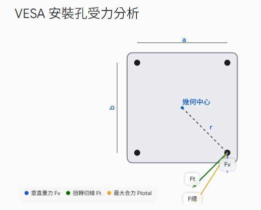

Anzû Design Studio
← 返回工具選單
工程計算工具
🖥️ VESA 螺絲受力計算工具
針對壁掛或機台，計算螺栓群在受偏心扭矩、剪力與拉力下的合力與安全係數。已依據 Shigley's 標準力學修正旋轉半徑與夾角計算。
參考文獻：機械設計手冊 (新版) 第2卷
方法 1：合力與剪力計算
方法 2：降伏正應力 (拉力)
方法 3&4：三柱容許應力 (面積/直徑)
系統與負載參數
貫穿所有計算方法的基礎設定
機台重量 (kg)
重量規範倍數
螺栓總數量
扭矩力臂 D (mm)
螺絲規格
螺絲中心距 a (mm)
螺絲中心距 b (mm)
基準強度 HV min (N/mm²)
系統總力 P
–
N
真實等效半徑 r
–
mm
螺栓截面積 As
–
mm²
螺絲直徑 D
–
mm
方法 1：單顆螺絲剪力計算
比較合力矩與螺絲剪應力
ⓘ
計算單顆螺栓在垂直載重與扭矩作用下的最大合力。
合力公式：
N合力 = √(Fv² + Ft² + 2·Fv·Ft·cosθ)
VESA 鎖固受力幾何 (前視圖)
右下角最危險螺栓之向量疊加關係

受力分析
Tz 扭轉力矩
–
N·mm
單顆承受重量 Fv
–
N
單顆承受扭轉力 Ft
–
N
最大合力 F_total
–
N
剪應力與安全係數評估
判定輸入之螺絲規格是否合格
目標安全係數 (SF)
剪降伏應力 τ_yp (HV/2)
–
N/mm²
實際剪應力 (合力/As)
–
N/mm²
實際安全係數 SF
–
進階推算：由最大合力反推螺栓需求
以目標安全係數 SF = 4 進行反向推算
目標容許剪應力
–
N/mm²
最小需求截面積
–
mm²
最小需求直徑
–
mm
建議螺栓規格
–
方法 2：降伏應力算法 (拉力)
計算正應力
ⓘ
評估螺絲自身降伏應力是否能承受機台重量。
屈服載荷：
As × HV_min
1. 本方法計算的是
拉力方向
。
2. 不考慮攻牙材質，只考慮螺絲本身的
拉伸強度
。
3. 強度值一律以
HV min
(基準強度最小值) 作計算。
4. 軸力計算方式：軸力係數
K=0.6
參考東日 (Tohnichi) 的技術規範 (軸力をボルト耐力の60％として算出)。
5. 系統與單顆的安全係數 (SF) 建議
> 4
。
參數設定
K (軸力係數)
目標安全係數 (SF)
承載力評估
單顆屈服載荷
–
N
單顆容許載荷 (× 軸力係數)
–
N
系統總容許載荷
–
N
系統安全係數 (總載荷/P)
–
單顆安全係數
–
方法 3&4：三柱算法 (反覆單向震動)
計算螺栓面積與直徑
ⓘ
依據《機械設計手冊》安全係數表設定 α 值，計算所需之最小截面積 (As) 與螺絲直徑 (D)。
• 當安全係數 = 5，得到螺栓截面積 = 4.704；取
M3
= 5.03
• 當安全係數 = 6，得到螺栓截面積 = 5.6448；取
M4
= 8.78
• 以三柱【反覆荷重單震】方式，結果與【單顆螺絲剪力計算】差不多，都是選
M4
。
•
ADC12
我歸類在【鑄鐵】；因 ADC12 較脆、有氣孔且延伸率小，所以安全係數提高。
• VESA 壁掛設定為
單震
。
方法 3：容許正應力算法 (計算截面積)
正應力安全係數 (α)
單向(單震) - α=5
雙向(雙震) - α=8
衝擊 - α=12
單向(單震) - α=6
雙向(雙震) - α=10
衝擊 - α=15
備註 / 文字說明 (供報告截圖使用)
容許正應力 σt (HV/α)
–
N/mm²
所需最小截面積 As
–
mm²
建議螺栓規格 (依面積)
–
方法 4：容許剪應力算法 (計算直徑)
剪應力 τ = 正應力 × 轉換係數
剪應力轉換係數
容許剪應力安全係數 (α)
單向(單震) - α=5
雙向(雙震) - α=8
衝擊 - α=12
單向(單震) - α=6
雙向(雙震) - α=10
衝擊 - α=15
容許剪應力 τt
–
N/mm²
所需最小直徑 D
–
mm
建議螺栓規格 (依直徑)
–
計算中...